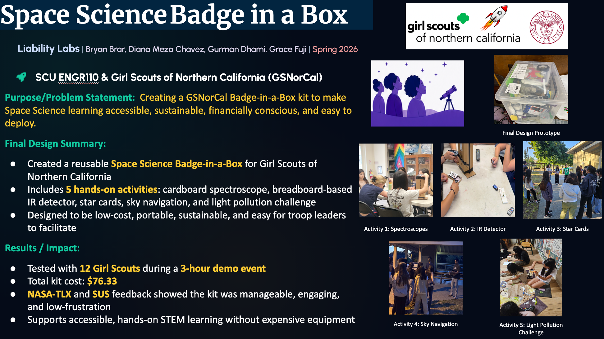
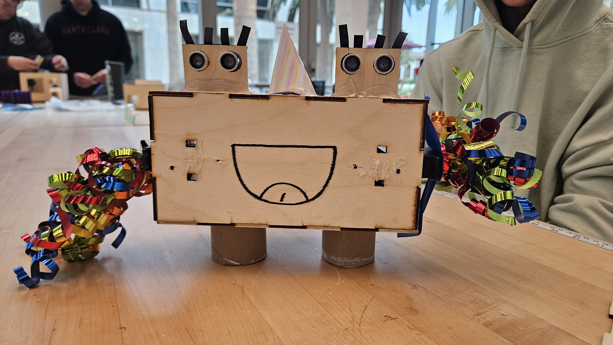

Coursework Projects.
Classroom builds from Santa Clara's School of Engineering.
Space Science Badge-in-a-Box · ENGR 110
Spring '26 · Completed
ENGR 110 partnered with Girl Scouts of Northern California to design a self-contained space-science curriculum. I worked as the team's resource and documentation manager, tracking materials lists and budgets and making sure all items were handed off cleanly from teammates to council.
A Personal Cheerleader Robot · ENGR 1
Spring '25 · Completed
Intro to Engineering (ENGR 1) asked each team to design and build a small personal robot from scratch: mechanical design, motion, and a live demo after a couple weeks of work. My team's first idea was an eraser for classroom whiteboard tables, but working through the physical and time constraints of the term pushed us toward something more playful: a cheerleader robot. I served as mechanical and project lead on our three-person team, leading the pivot, laser cutting the final parts, and assembling the robot for demo day.